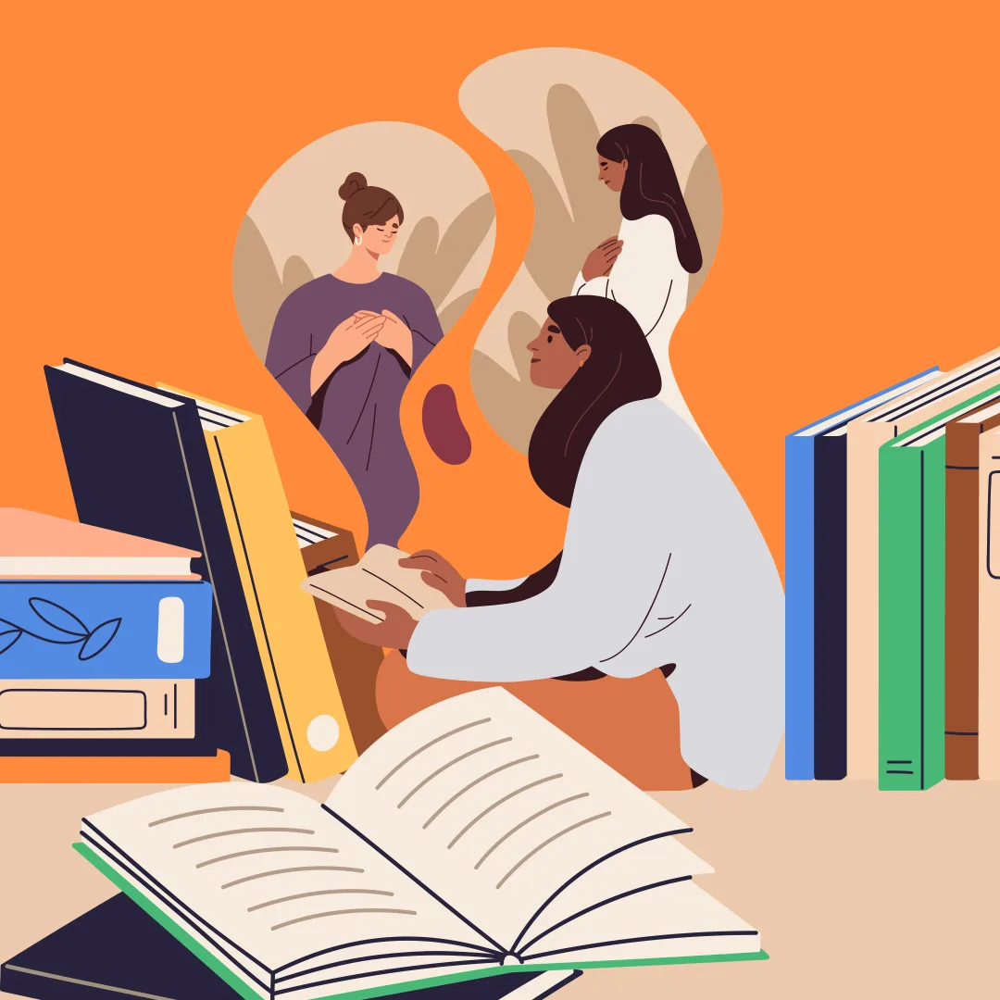
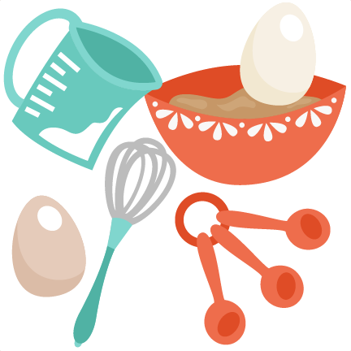
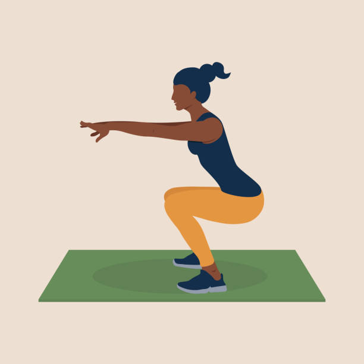

I am a fourth year ESSEC BBA exchange student from Canada. I have always wanted to code and I am very excited to learn HTML.
Goodreads ProfileOne of my favourite hobbies is reading! Although I read many different genres, my favourites are literary fiction, fantasy, and mystery. I also have recently gotten into translated literary fiction and it is so fascinating to read works by diverse authors. My current read is Nothing but the Rain by Naomi Salman and I am loving it so far!
I love baking and trying new recipes! I find it so relaxing to bake some fresh treats and watch a movie. My favourite desserts to bake are chocolate chip cookies, brownies, and cinnamon rolls. While I'm in France, I hope to learn how to make some french desserts like macarons, tarte tatin, and crepes.
I am very passionate about yoga and pilates! I typically try to spend 15 minutes in the morning doing pilates. Also, I prefer doing them at home. I follow Youtube exercises most of the time but occasionally I will freestyle. Once I started yoga/pilates, I found myself happier and physically healthier.
